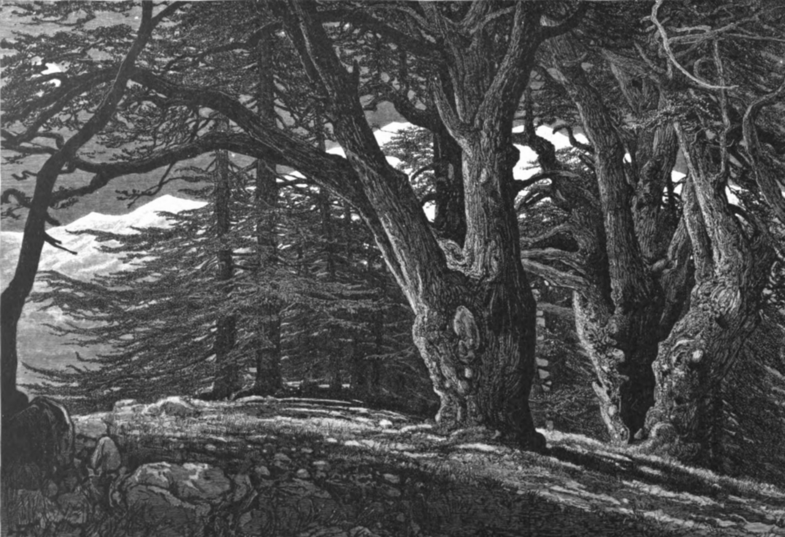

Traditions عادات
More than food on a plate.
The habits, feasts and street corners where Lebanese food really lives.

Ahla w sahlaأهلا وسهلاwelcome to the Lebanese table
Traditions عادات
The habits, feasts and street corners where Lebanese food really lives.
